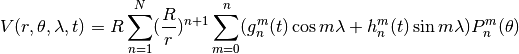
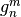
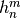
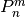
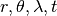

International Geomagnetic Reference Field Module¶
This module computes the compass deviation (or variance) at a given point. It allows mapping from true bearings to magnetic bearings.
See http://www.ngdc.noaa.gov/IAGA/vmod/igrf.html
Important
Public Domain
“The geomag 7.0 software code is in the public domain and not licensed or under copyright”
The model is in the igrf11coeffs.txt file.
This can be downloaded from http://www.ngdc.noaa.gov/IAGA/vmod/igrf11coeffs.txt
The test cases from from the Geomag 7.0 software, available here http://www.ngdc.noaa.gov/IAGA/vmod/geomag70_linux.tar.gz
Specifically, the file geomag70_linux/sample_out_IGRF11.txt
provides usable, known unit test results.
This follows the lead of http://www.mathworks.com/matlabcentral/fileexchange/28874-igrf-magnetic-field
There are two simplifications from the Fortran codes:
isv = 0: main field only. We only want current declination, not rate of change.- Latitude and longitude supplied; latitude is converted to colatitude.
Typical use is something like this.
igrf11syn = igrf11.IGRF11( "igrf11coeffs.txt" )
today = datetime.date.today()
first_of_year= today.replace( month=1, day=1 )
date= today.year + (today.toordinal() - first_of_year.toordinal())/365.242
x, y, z, f = igrf11syn( date, nlat*math.pi/180, elong*math.pi/180 )
d = 180.0/math.pi*math.atan2(y, x) # Declination or Variance
From the web page.

With  and  are the coefficients to determine phase and amplitude.
 are associated Legendre functions of the first kind of degree n, order m.
R is the radius of the Earth.
The position  is the altitude, latitude, longitude and time.
Module Docstring¶
"""IGRF - International Geomagnetic Reference Field
http://www.ngdc.noaa.gov/IAGA/vmod/igrf.html
This is based on http://www.ngdc.noaa.gov/IAGA/vmod/igrf11.f
"""
IGRF11 Fortran Comments¶
These are two important comment blocks from the igrf11.f file.
C This is a program for synthesising geomagnetic field values from the
C International Geomagnetic Reference Field series of models as agreed
c in December 2009 by IAGA Working Group V-MOD.
C It is the 11th generation IGRF, ie the 10th revision.
C The main-field models for 1900.0, 1905.0,..1940.0 and 2010.0 are
C non-definitive, those for 1945.0, 1950.0,...2005.0 are definitive and
C the secular-variation model for 2010.0 to 2015.0 is non-definitive.
C
C Main-field models are to degree and order 10 (ie 120 coefficients)
C for 1900.0-1995.0 and to 13 (ie 195 coefficients) for 2000.0 onwards.
C The predictive secular-variation model is to degree and order 8 (ie 80
C coefficients).
C
C Options include values at different locations at different
C times (spot), values at same location at one year intervals
C (time series), grid of values at one time (grid); geodetic or
C geocentric coordinates, latitude & longitude entered as decimal
C degrees or degrees & minutes (not in grid), choice of main field
C or secular variation or both (grid only).
C Recent history of code:
c Aug 2003:
c Adapted from 8th generation version to include new maximum degree for
c main-field models for 2000.0 and onwards and use WGS84 spheroid instead
c of International Astronomical Union 1966 spheroid as recommended by IAGA
c in July 2003. Reference radius remains as 6371.2 km - it is NOT the mean
c radius (= 6371.0 km) but 6371.2 km is what is used in determining the
c coefficients.
c Dec 2004:
c Adapted for 10th generation
c Jul 2005:
c 1995.0 coefficients as published in igrf9coeffs.xls and igrf10coeffs.xls
c now used in code - (Kimmo Korhonen spotted 1 nT difference in 11 coefficients)
c Dec 2009:
c Adapted for 11th generation
This is the comment from the relevant subroutine.
subroutine igrf11syn (isv,date,itype,alt,colat,elong,x,y,z,f)
c
c This is a synthesis routine for the 11th generation IGRF as agreed
c in December 2009 by IAGA Working Group V-MOD. It is valid 1900.0 to
c 2015.0 inclusive. Values for dates from 1945.0 to 2005.0 inclusive are
c definitive, otherwise they are non-definitive.
c INPUT
c isv = 0 if main-field values are required
c isv = 1 if secular variation values are required
c date = year A.D. Must be greater than or equal to 1900.0 and
c less than or equal to 2020.0. Warning message is given
c for dates greater than 2015.0. Must be double precision.
c itype = 1 if geodetic (spheroid)
c itype = 2 if geocentric (sphere)
c alt = height in km above sea level if itype = 1
c = distance from centre of Earth in km if itype = 2 (>3485 km)
c colat = colatitude (0-180)
c elong = east-longitude (0-360)
c alt, colat and elong must be double precision.
c OUTPUT
c x = north component (nT) if isv = 0, nT/year if isv = 1
c y = east component (nT) if isv = 0, nT/year if isv = 1
c z = vertical component (nT) if isv = 0, nT/year if isv = 1
c f = total intensity (nT) if isv = 0, rubbish if isv = 1
c
c To get the other geomagnetic elements (D, I, H and secular
c variations dD, dH, dI and dF) use routines ptoc and ptocsv.
c
c Adapted from 8th generation version to include new maximum degree for
c main-field models for 2000.0 and onwards and use WGS84 spheroid instead
c of International Astronomical Union 1966 spheroid as recommended by IAGA
c in July 2003. Reference radius remains as 6371.2 km - it is NOT the mean
c radius (= 6371.0 km) but 6371.2 km is what is used in determining the
c coefficients. Adaptation by Susan Macmillan, August 2003 (for
c 9th generation), December 2004 & December 2009.
c
c Coefficients at 1995.0 incorrectly rounded (rounded up instead of
c to even) included as these are the coefficients published in Excel
c spreadsheet July 2005.
c
Python Imports¶
This depends on a few Python modules.
import math
import pprint
import datetime
from collections import Callable
import warnings
import pathlib
Essential Class Definition¶
-
class
igrf11.IGRF11¶
The IGRF11 calculation requires a complex table of coefficients. By defining a callable object, we can bind the coefficient loading with the rest of the calculations.
class IGRF11( Callable ):
"""The IGRF11 model.
"""
-
igrf11.__init__(model)¶ Initialization is a matter of loading the coefficients from the appropriate file. Ideally, this is part of the installation, but the file could be located elsewhere.
def __init__( self, model="./igrf11coeffs.txt" ):
"""Initialize the model coefficients.
:param model: the :file:`igrf11coeffs.txt` file.
This will look in the named directory.
It will look in the installed directory for the given name.
And (since you may be running from the distribution kit)
it will look in the parent of the installed directory.
"""
named= pathlib.Path(model)
installed= pathlib.Path(__file__).with_name( named.name )
parent= installed.parent / named.name
for location in named, installed, parent:
try:
self.g, self.h= self.load_coeffs( location )
break
except IOError as e:
warnings.warn( "Not Found {0}".format(model_path) )
continue
-
igrf11.load_coeffs(file_name)¶ Coefficient loading includes disentangling the unpleasant sparse matrix optimizations. The Fortran program had a number of very clever techniques to ruthlessly minimize the memory footprint.
The file has a number of comment lines which begin with
#. These are simply skipped.The file has heading lines. The last of these starts with
g/h. This line provides useful column titles.
@staticmethod
def load_coeffs( file_name ):
"""Return two dictionaries of g and h coefficients by year and [n,m] index.
Note that the igrf11 legacy fortran code has a bunch of unpleasant sparse matrix optimizations.
Legacy g and h coefficients were loaded in a single, horrible array.
Years 1900 through 1990 have 120 values. Degree of 10.
Years 1995 to 2012 have 195 values. Degree of 13.
:param file_name: the path to the :file:`igrf11coeffs.txt` file.
Ideally this is a :class:`pathlib.Path`, but a string will do.
Ideally we'd use :mod:`urllib2` instead of simple
:func:`open` so that we could use
"file:///path/to/file" or "http://server/path/to/file".
"""
file_path= pathlib.Path(file_name)
g= {}
h= {}
legacy_gh = {}
with file_path.open() as source:
row_iter= iter(source)
for row in row_iter:
if not row.startswith("#"): break
for row in row_iter:
if row.startswith("g/h"): break
headings= row.strip().split()
years = [int(t[:-2]) for t in headings[3:-1]] + [2015]
for y in years:
legacy_gh[y]= [ None ] # Fortran is 1-based; fill in the zero slot.
g[y]= {}
h[y]= {}
for i, row in enumerate( r.strip().split() for r in row_iter ):
g_or_h = row[0]
n, m = map(int, row[1:3])
coefs= map(float, row[3:])
for yr, coef in zip(years,coefs):
if g_or_h == "g":
g[yr][n,m]= coef
elif g_or_h == "h":
h[yr][n,m]= coef
else:
raise Exception( "Bad Data" )
if i >= 120 and yr <= 1990:
continue # Skip these to be consistent with Fortran.
legacy_gh[yr].append( coef )
# pprint.pprint( legacy_gh ) # confirm that we have the same structure.
return g, h
Todo
Use urllib2
The coefficient file should be opened as a URL, not a local file. While most use cases involve disconnected computers, with a statically downloaded file, it’s easy to cover all the bases by opening a URL.
The official file: http://www.ngdc.noaa.gov/IAGA/vmod/igrf11coeffs.txt
The local installation of this application is used to track down a copy.
-
igrf11.__call__(date, nlat, elong, alt=0.0, coord='D')¶ The synthesis function that computes the IGRF model for a given point in time and space.
There are a few major steps to this algorithm.
- Resolve Year and determine if we’re doing Interpolation or Extrapolation.
- Initialize the calculation.
- Compute the Schmidt quasi-normal coefficients p and x(=q).
- Convert back to coordinate system specified by
coord.
def __call__(self, date, nlat, elong, alt=0.0, coord='D' ):
"""IGRF 11 model.
:param date: is floating-point year + day/365.242.
:param nlat: north latitude (in radians)
:param elog: east longitude (in radians)
:param alt: altitude above surface in kilometers for "D" (geodetic)
or radius in kilometers for "C" (geocentric)
:returns: tuple of x, y, z and f;
x = north component (nT)
y = east component (nT)
z = vertical component (nT)
f = total intensity (nT)
"""
# Note that these will use one-based indexing.
p= {}
q= {}
cl= {}
sl= {}
colat = math.pi/2-nlat
x, y, z = 0.0, 0.0, 0.0
## Resolve Year and Interpolation/Extrapolation
if date < 2010:
ll= int(date-1900)//5 # year index
t = (date-1900)/5-ll # weighting factor
if date < 1995:
nmx = 10 # degrees
kmx = (nmx+1)*(nmx+2)//2 # total number of coefficients
# unused Fortran indexing
#nc = nmx*(nmx+2) # size of gh array = 120
#ll = nc*ll # index of year index in original massive gh array
else:
nmx = 13 # degrees
kmx = (nmx+1)*(nmx+2)//2 # total number of coefficients
# unused Fortran indexing
#nc = nmx*(nmx+2) # size of gh array = 195
#ll = 120*19 + nc*(date-1995)//5 # 19 small models, rest ore large models
tc= 1.0 - t # weighting factor
year= 1900+5*((int(date)-1900)//5)
else:
#Extrapolating past 2010.
t= date - 2010
tc= 1.0
nmx = 13 # degrees
kmx = (nmx+1)*(nmx+2)//2 # total number of coefficients
# unused Fortran indexing
#nc = nmx*(nmx+2) # size of gh array = 195 for last two years
#ll = 120*19+3*195 # next-to-last year's coefficients
year= 2010
##print( "date {0}, year_key {1}, ll {2}, nc {3}".format(date, year_key, ll, nc) )
## 2
r = alt # radius for Geocentric; will be fixed for geodetic
ct = math.cos(colat)
st = math.sin(colat)
cl[1] = math.cos(elong)
sl[1] = math.sin(elong)
cd = 1.0
sd = 0.0
if coord == "D":
## conversion from geodetic to geocentric coordinates
## (using the WGS84 spheroid)
a2 = 40680631.6
b2 = 40408296.0
one = a2*st*st
two = b2*ct*ct
three = one + two
rho = math.sqrt(three)
r = math.sqrt(alt*(alt + 2.0*rho) + (a2*one + b2*two)/three)
cd = (alt + rho)/r
sd = (a2 - b2)/rho*ct*st/r
one = ct
ct = ct*cd - st*sd
st = st*cd + one*sd
## 3
ratio = 6371.2/r # Earth Mean Radius in km
rr = ratio*ratio
## computation of Schmidt quasi-normal coefficients p and x(=q)
p[1] = 1.0
p[3] = st
q[1] = 0.0
q[3] = ct
#l = 1
n = 0 # Outer loop (from 1 to nmx)
m = 1 # Inner loop (from 1 to n)
for k in range(2,kmx+1):
if n < m:
m= 0
n= n+1
rr= rr*ratio
fn= n
gn= n-1
## 4
fm= m
if m == n:
if k != 3:
one = math.sqrt(1.0 - 0.5/fm)
j = k - n - 1
p[k] = one*st*p[j]
q[k] = one*(st*q[j] + ct*p[j])
cl[m] = cl[m-1]*cl[1] - sl[m-1]*sl[1]
sl[m] = sl[m-1]*cl[1] + cl[m-1]*sl[1]
else: # m != n
## 5
gmm = m*m
one = math.sqrt(fn*fn - gmm)
two = math.sqrt(gn*gn - gmm)/one
three = (fn + gn)/one
i = k - n
j = i - n + 1
p[k] = three*ct*p[i] - two*p[j]
q[k] = three*(ct*q[i] - st*p[i]) - two*q[j]
## 6
## synthesis of x, y and z in geocentric coordinates
# unused Fortran indexing
#lm = ll + l # Index into gh based on ll (year) + l (iteration)
#print( "n {0}, m {1}, gh[year][n,m] {2}".format(n,m,l) )
g_year= self.g[year][n,m]
g_next= self.g[year+5][n,m]
one = (tc*g_year + t*g_next)*rr
if m != 0:
# m non-zero case, use h.
h_year= self.h[year][n,m]
h_next= self.h[year+5][n,m]
two = (tc*h_year + t*h_next)*rr
three = one*cl[m] + two*sl[m]
x = x + three*q[k]
z = z - (fn + 1.0)*three*p[k]
if st != 0: # sine colat == 0 is equator?
y = y + (one*sl[m] - two*cl[m])*fm*p[k]/st
else:
## 7
y = y + (one*sl[m] - two*cl[m])*q[k]*ct
## 8
#l = l + 2
else:
# m=0 case, use g only.
## 9
x = x + one*q[k]
z = z - (fn + 1.0)*one*p[k]
#l = l + 1
## 10
m = m + 1
# End of the coefficient loop on k
## conversion back to coordinate system specified by itype
one = x
x = x*cd + z*sd
z = z*cd - one*sd
f = math.sqrt(x*x + y*y + z*z)
return x, y, z, f
igrf11syn Function¶
The IGRF11 class is used to create a callable object
that does IGRF11 computations.
-
igrf11.igrf11syn(date, nlat, elong, alt=0.0, coord='D')¶
This loads the default coefficient set, igrf11coeffs.txt
extracted from the geomag7.0 installation.
igrf11syn = IGRF11( "igrf11coeffs.txt" )
Helper Functions¶
Often, we simply want the current declination at a given latitude and longitude.
-
igrf11.declination(nlat, elong, date=None)¶ Parameters: - nlat – North Latitude in degrees.
- elong – East Longitude in degrees.
- date – Date to use; defaults to current date.
def declination( nlat, elong, date=None ):
"""IGRF 11 model for declination today.
:param nlat: north latitude as floating-point degrees
:param elog: east longitude as floating-point degrees
:param date: :py:class:`datetime.date` in question, default is today.
:returns: declination as degrees.
"""
if date is None:
date = datetime.date.today()
first_of_year= date.replace( month=1, day=1 )
astro_dt_tm= date.year + (date.toordinal() - first_of_year.toordinal())/365.242
x, y, z, f = igrf11syn( astro_dt_tm, math.radians(nlat), math.radians(elong) )
D = math.degrees(math.atan2(y, x)) # Declination
return D
This is a handy function to convert a simple degree value
into a proper (degree,minute) pair with appropriate
signs.
-
igrf11.deg2dm(deg)¶ Parameters: deg – Returns: (deg, minute) values
def deg2dm( deg ):
"""deg2dm( degrees ) -> deg, min
:param deg: Degrees to convert
:return: tuple of :samp:`({deg}, {min})` with proper signs.
"""
sign= -1 if deg < 0 else +1
ad= abs(deg)
d= sign*int(ad)
m= int(60*(ad-int(ad))+.5)*(sign if d == 0 else 1)
return d, m